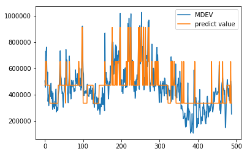
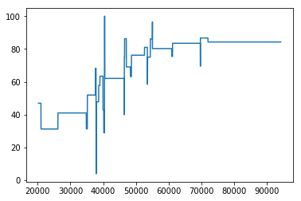

<!DOCTYPE html>
<html>
<head><meta name="generator" content="Hexo 3.8.0">
  <meta charset="utf-8">
  
  <title>2.2 决策树模型简介 | Xdh</title>
  <meta name="viewport" content="width=device-width, initial-scale=1, maximum-scale=1">
  
  
  
  
  <meta name="description" content="决策树模型实现现在，我们使用回归决策树来试着预测波士顿的房价。 了解数据集房价受到多种因素影响，而在我们的数据集中，共有三个变量可以使用来对波士顿的房价进行回归预测。变量内容如下：    变量 解释     RM 住所含有的平均房间数   LSTAT 住所所在地区含有底层阶层百分比   PTRATIO 所在地区教师学生比   MDEV 房价中位数    首先，让我们将数据集读取进来。 123456">
<meta property="og:type" content="article">
<meta property="og:title" content="2.2 决策树模型简介">
<meta property="og:url" content="http://yoursite.com/2019/05/23/2-2-决策树模型简介/index.html">
<meta property="og:site_name" content="Xdh">
<meta property="og:description" content="决策树模型实现现在，我们使用回归决策树来试着预测波士顿的房价。 了解数据集房价受到多种因素影响，而在我们的数据集中，共有三个变量可以使用来对波士顿的房价进行回归预测。变量内容如下：    变量 解释     RM 住所含有的平均房间数   LSTAT 住所所在地区含有底层阶层百分比   PTRATIO 所在地区教师学生比   MDEV 房价中位数    首先，让我们将数据集读取进来。 123456">
<meta property="og:locale" content="default">
<meta property="og:image" content="http://yoursite.com/2019/05/23/2-2-决策树模型简介/output_37_0.png">
<meta property="og:image" content="http://yoursite.com/2019/05/23/2-2-决策树模型简介/output_49_0.png">
<meta property="og:updated_time" content="2019-05-23T08:02:47.641Z">
<meta name="twitter:card" content="summary">
<meta name="twitter:title" content="2.2 决策树模型简介">
<meta name="twitter:description" content="决策树模型实现现在，我们使用回归决策树来试着预测波士顿的房价。 了解数据集房价受到多种因素影响，而在我们的数据集中，共有三个变量可以使用来对波士顿的房价进行回归预测。变量内容如下：    变量 解释     RM 住所含有的平均房间数   LSTAT 住所所在地区含有底层阶层百分比   PTRATIO 所在地区教师学生比   MDEV 房价中位数    首先，让我们将数据集读取进来。 123456">
<meta name="twitter:image" content="http://yoursite.com/2019/05/23/2-2-决策树模型简介/output_37_0.png">
  
    <link rel="alternate" href="/atom.xml" title="Xdh" type="application/atom+xml">
  

  

  <link rel="icon" href="/css/images/mylogo.jpg">
  <link rel="apple-touch-icon" href="/css/images/mylogo.jpg">
  
    <link href="//fonts.googleapis.com/css?family=Source+Code+Pro" rel="stylesheet" type="text/css">
  
  <link href="https://fonts.googleapis.com/css?family=Open+Sans|Montserrat:700" rel="stylesheet" type="text/css">
  <link href="https://fonts.googleapis.com/css?family=Roboto:400,300,300italic,400italic" rel="stylesheet" type="text/css">
  <link href="//netdna.bootstrapcdn.com/font-awesome/4.0.3/css/font-awesome.css" rel="stylesheet">
  <style type="text/css">
    @font-face{font-family:futura-pt; src:url("css/fonts/FuturaPTBold.otf") format("woff");font-weight:500;font-style:normal;}
    @font-face{font-family:futura-pt-light; src:url("css/fonts/FuturaPTBook.otf") format("woff");font-weight:lighter;font-style:normal;}
    @font-face{font-family:futura-pt-italic; src:url("css/fonts/FuturaPTBookOblique.otf") format("woff");font-weight:400;font-style:italic;}
}

  </style>
  <link rel="stylesheet" href="/css/style.css">

  <script src="/js/jquery-3.1.1.min.js"></script>
  <script src="/js/bootstrap.js"></script>

  <!-- Bootstrap core CSS -->
  <link rel="stylesheet" href="/css/bootstrap.css">

  
    <link rel="stylesheet" href="/css/dialog.css">
  

  

  
    <link rel="stylesheet" href="/css/header-post.css">
  

  
  
  

</head>
</html>


  <body data-spy="scroll" data-target="#toc" data-offset="50">


  
  <div id="container">
    <div id="wrap">
      
        <header>

    <div id="allheader" class="navbar navbar-default navbar-static-top" role="navigation">
        <div class="navbar-inner">
          
          <div class="container"> 
            <button type="button" class="navbar-toggle" data-toggle="collapse" data-target=".navbar-collapse">
              <span class="sr-only">Toggle navigation</span>
              <span class="icon-bar"></span>
              <span class="icon-bar"></span>
              <span class="icon-bar"></span>
            </button>

            
              <a class="brand" style="
                 margin-top: 0px;" href="#" data-toggle="modal" data-target="#myModal">
                  
              </a>
            
            
            <div class="navbar-collapse collapse">
              <ul class="hnav navbar-nav">
                
                  <li> <a class="main-nav-link" href="/">Home</a> </li>
                
                  <li> <a class="main-nav-link" href="/archives">Archives</a> </li>
                
                  <li> <a class="main-nav-link" href="/about">About</a> </li>
                
                  <li><div id="search-form-wrap">

    <form action="//google.com/search" method="get" accept-charset="UTF-8" class="search-form"><input type="search" name="q" class="search-form-input" placeholder="index.search"><button type="submit" class="search-form-submit"> </button><input type="hidden" name="sitesearch" value="http://yoursite.com"></form>

</div></li>
            </ul></div>
          </div>
                
      </div>
    </div>

</header>


      
            
      <div id="content" class="outer">
        
          <section id="main" style="float:none;"><article id="post-2-2-决策树模型简介" style="width: 75%; float:left;" class="article article-type-post" itemscope itemprop="blogPost">
  <div id="articleInner" class="article-inner">
    
    
      <header class="article-header">
        
  
    <h1 class="thumb" itemprop="name">
      2.2 决策树模型简介
    </h1>
  

      </header>
    
    <div class="article-meta">
      
	<a href="/2019/05/23/2-2-决策树模型简介/" class="article-date">
	  <time datetime="2019-05-23T07:50:13.000Z" itemprop="datePublished">2019-05-23</time>
	</a>

      
      
      

    </div>
    <div class="article-entry" itemprop="articleBody">
      
        <h3 id="决策树模型实现"><a href="#决策树模型实现" class="headerlink" title="决策树模型实现"></a>决策树模型实现</h3><p>现在，我们使用回归决策树来试着预测波士顿的房价。</p>
<h3 id="了解数据集"><a href="#了解数据集" class="headerlink" title="了解数据集"></a>了解数据集</h3><p>房价受到多种因素影响，而在我们的数据集中，共有三个变量可以使用来对波士顿的房价进行回归预测。变量内容如下：</p>
<table>
<thead>
<tr>
<th>变量</th>
<th>解释</th>
</tr>
</thead>
<tbody>
<tr>
<td>RM</td>
<td>住所含有的平均房间数</td>
</tr>
<tr>
<td>LSTAT</td>
<td>住所所在地区含有底层阶层百分比</td>
</tr>
<tr>
<td>PTRATIO</td>
<td>所在地区教师学生比</td>
</tr>
<tr>
<td>MDEV</td>
<td>房价中位数</td>
</tr>
</tbody>
</table>
<p><br><br>首先，让我们将数据集读取进来。</p>
<figure class="highlight python"><table><tr><td class="gutter"><pre><span class="line">1</span><br><span class="line">2</span><br><span class="line">3</span><br><span class="line">4</span><br><span class="line">5</span><br><span class="line">6</span><br><span class="line">7</span><br></pre></td><td class="code"><pre><span class="line"><span class="keyword">from</span> sklearn.datasets <span class="keyword">import</span> load_boston</span><br><span class="line"><span class="keyword">from</span> sklearn.tree <span class="keyword">import</span> DecisionTreeRegressor</span><br><span class="line"><span class="keyword">import</span> pandas <span class="keyword">as</span> pd</span><br><span class="line"><span class="keyword">import</span> numpy <span class="keyword">as</span> np</span><br><span class="line"></span><br><span class="line">price_data = pd.read_csv(<span class="string">'boston_price.csv'</span>)</span><br><span class="line">price_data.head(<span class="number">5</span>)</span><br></pre></td></tr></table></figure>
<div><style scoped>    .dataframe tbody tr th:only-of-type {        vertical-align: middle;    }    .dataframe tbody tr th {        vertical-align: top;    }    .dataframe thead th {        text-align: right;    }</style><table border="1" class="dataframe"><thead><tr style="text-align: right;"><th></th><th>RM</th><th>LSTAT</th><th>PTRATIO</th><th>MDEV</th></tr></thead><tbody><tr><th>0</th><td>6.575</td><td>4.98</td><td>15.3</td><td>504000.0</td></tr><tr><th>1</th><td>6.421</td><td>9.14</td><td>17.8</td><td>453600.0</td></tr><tr><th>2</th><td>7.185</td><td>4.03</td><td>17.8</td><td>728700.0</td></tr><tr><th>3</th><td>6.998</td><td>2.94</td><td>18.7</td><td>701400.0</td></tr><tr><th>4</th><td>7.147</td><td>5.33</td><td>18.7</td><td>760200.0</td></tr></tbody></table></div>


<p>为了将问题简单化，我们先单独考虑平均房间数对房价的影响。为此，我们先观察平均房间数的最大值，最小值和平均数。</p>
<figure class="highlight python"><table><tr><td class="gutter"><pre><span class="line">1</span><br><span class="line">2</span><br><span class="line">3</span><br><span class="line">4</span><br></pre></td><td class="code"><pre><span class="line">room_num = price_data[<span class="string">'RM'</span>]</span><br><span class="line"><span class="comment">#np.max(room_num)</span></span><br><span class="line"><span class="comment">#np.min(room_num)</span></span><br><span class="line">np.mean(room_num)</span><br></pre></td></tr></table></figure>
<pre><code>6.240288343558291
</code></pre><p>现在，让我们比较一下：平均房价<strong>大于70万</strong> 或 <strong>小于等于70万</strong> 时，平均房间数的不同</p>
<figure class="highlight python"><table><tr><td class="gutter"><pre><span class="line">1</span><br><span class="line">2</span><br><span class="line">3</span><br></pre></td><td class="code"><pre><span class="line"><span class="comment"># 提取平均房价大于70万的数据</span></span><br><span class="line">price_over_70 = price_data[price_data[<span class="string">'MDEV'</span>] &gt; <span class="number">700000</span>]</span><br><span class="line">price_over_70.head(<span class="number">5</span>)</span><br></pre></td></tr></table></figure>
<div><style scoped>    .dataframe tbody tr th:only-of-type {        vertical-align: middle;    }    .dataframe tbody tr th {        vertical-align: top;    }    .dataframe thead th {        text-align: right;    }</style><table border="1" class="dataframe"><thead><tr style="text-align: right;"><th></th><th>RM</th><th>LSTAT</th><th>PTRATIO</th><th>MDEV</th></tr></thead><tbody><tr><th>2</th><td>7.185</td><td>4.03</td><td>17.8</td><td>728700.0</td></tr><tr><th>3</th><td>6.998</td><td>2.94</td><td>18.7</td><td>701400.0</td></tr><tr><th>4</th><td>7.147</td><td>5.33</td><td>18.7</td><td>760200.0</td></tr><tr><th>40</th><td>7.024</td><td>1.98</td><td>18.3</td><td>732900.0</td></tr><tr><th>55</th><td>7.249</td><td>4.81</td><td>17.9</td><td>743400.0</td></tr></tbody></table></div>


<figure class="highlight python"><table><tr><td class="gutter"><pre><span class="line">1</span><br><span class="line">2</span><br></pre></td><td class="code"><pre><span class="line"><span class="comment"># 计算平均房间数</span></span><br><span class="line">np.mean(price_over_70[<span class="string">'RM'</span>])</span><br></pre></td></tr></table></figure>
<pre><code>7.441600000000003
</code></pre><figure class="highlight python"><table><tr><td class="gutter"><pre><span class="line">1</span><br><span class="line">2</span><br><span class="line">3</span><br></pre></td><td class="code"><pre><span class="line"><span class="comment"># 提取平均房价小于等于70万的数据</span></span><br><span class="line">price_below_70 = price_data[price_data[<span class="string">'MDEV'</span>] &lt;= <span class="number">700000</span>]</span><br><span class="line">price_below_70.head(<span class="number">5</span>)</span><br></pre></td></tr></table></figure>
<div><style scoped>    .dataframe tbody tr th:only-of-type {        vertical-align: middle;    }    .dataframe tbody tr th {        vertical-align: top;    }    .dataframe thead th {        text-align: right;    }</style><table border="1" class="dataframe"><thead><tr style="text-align: right;"><th></th><th>RM</th><th>LSTAT</th><th>PTRATIO</th><th>MDEV</th></tr></thead><tbody><tr><th>0</th><td>6.575</td><td>4.98</td><td>15.3</td><td>504000.0</td></tr><tr><th>1</th><td>6.421</td><td>9.14</td><td>17.8</td><td>453600.0</td></tr><tr><th>5</th><td>6.430</td><td>5.21</td><td>18.7</td><td>602700.0</td></tr><tr><th>6</th><td>6.012</td><td>12.43</td><td>15.2</td><td>480900.0</td></tr><tr><th>7</th><td>6.172</td><td>19.15</td><td>15.2</td><td>569100.0</td></tr></tbody></table></div>


<figure class="highlight python"><table><tr><td class="gutter"><pre><span class="line">1</span><br><span class="line">2</span><br></pre></td><td class="code"><pre><span class="line"><span class="comment"># 计算平均房间数</span></span><br><span class="line">np.mean(price_below_70[<span class="string">'RM'</span>])</span><br></pre></td></tr></table></figure>
<pre><code>6.133267260579074
</code></pre><h3 id="随堂练习-1"><a href="#随堂练习-1" class="headerlink" title="随堂练习 1"></a>随堂练习 1</h3><p>导入石油价格数据集(mom_student_data.csv)，并输出前5行</p>
<figure class="highlight python"><table><tr><td class="gutter"><pre><span class="line">1</span><br><span class="line">2</span><br><span class="line">3</span><br><span class="line">4</span><br><span class="line">5</span><br><span class="line">6</span><br></pre></td><td class="code"><pre><span class="line"><span class="comment"># grader format</span></span><br><span class="line"></span><br><span class="line"><span class="comment">### BEGIN SOLUTION</span></span><br><span class="line">mom_student_data = pd.read_csv(<span class="string">'mom_student_data.csv'</span>, index_col=<span class="number">0</span>)</span><br><span class="line">mom_student_data.head(<span class="number">5</span>)</span><br><span class="line"><span class="comment">### END SOLUTION</span></span><br></pre></td></tr></table></figure>
<div><style scoped>    .dataframe tbody tr th:only-of-type {        vertical-align: middle;    }    .dataframe tbody tr th {        vertical-align: top;    }    .dataframe thead th {        text-align: right;    }</style><table border="1" class="dataframe"><thead><tr style="text-align: right;"><th></th><th>PID</th><th>childrace</th><th>childsex</th><th>birthyear</th><th>Score</th><th>HIGHEST GRADE COMPLETED</th><th>TOTAL IQ SCORE</th><th>SAMPLE IDENTIFICATION CODE</th><th>RACIAL</th><th>EMPLOYMENT STATUS 1979</th><th>REGION 1979</th><th>MARITAL STATUS 1979</th><th>TOTAL NET FAMILY INCOME 1979</th><th>AFQT</th><th>EMPLOYMENT STATUS 2014</th><th>TOTAL NET FAMILY INCOME 2014</th><th>REGION 2014</th><th>MARITAL STATUS 2014</th></tr></thead><tbody><tr><th>0</th><td>9</td><td>3</td><td>1</td><td>1979</td><td>46</td><td>9</td><td>89.0</td><td>6</td><td>3</td><td>1</td><td>1</td><td>3</td><td>45567</td><td>43</td><td>2</td><td>41220.0</td><td>1</td><td>2</td></tr><tr><th>1</th><td>7043</td><td>2</td><td>1</td><td>1981</td><td>47</td><td>4</td><td>75.0</td><td>13</td><td>3</td><td>2</td><td>2</td><td>0</td><td>20959</td><td>78</td><td>2</td><td>40202.0</td><td>2</td><td>0</td></tr><tr><th>2</th><td>8797</td><td>1</td><td>2</td><td>1990</td><td>25</td><td>3</td><td>28.0</td><td>14</td><td>2</td><td>2</td><td>4</td><td>0</td><td>5098</td><td>29</td><td>2</td><td>21774.0</td><td>4</td><td>6</td></tr><tr><th>3</th><td>3040</td><td>2</td><td>1</td><td>1982</td><td>28</td><td>13</td><td>113.0</td><td>7</td><td>3</td><td>1</td><td>1</td><td>1</td><td>57812</td><td>14</td><td>3</td><td>60610.0</td><td>1</td><td>1</td></tr><tr><th>4</th><td>1137</td><td>3</td><td>1</td><td>2001</td><td>78</td><td>15</td><td>80.0</td><td>5</td><td>3</td><td>1</td><td>3</td><td>2</td><td>64082</td><td>27</td><td>4</td><td>47115.0</td><td>3</td><td>1</td></tr></tbody></table></div>


<h3 id="随堂练习-2"><a href="#随堂练习-2" class="headerlink" title="随堂练习 2"></a>随堂练习 2</h3><p>计算当母亲的HIGHEST GRADE COMPLETED<strong>大于16</strong>时，孩子的学业成绩(Score)的平均数。</p>
<figure class="highlight python"><table><tr><td class="gutter"><pre><span class="line">1</span><br><span class="line">2</span><br><span class="line">3</span><br><span class="line">4</span><br><span class="line">5</span><br><span class="line">6</span><br></pre></td><td class="code"><pre><span class="line"><span class="comment"># grader format</span></span><br><span class="line"></span><br><span class="line"><span class="comment">### BEGIN SOLUTION</span></span><br><span class="line">grade_over16 = mom_student_data[mom_student_data[<span class="string">'HIGHEST GRADE COMPLETED'</span>] &gt; <span class="number">16</span>]</span><br><span class="line">np.mean(grade_over16[<span class="string">'Score'</span>])</span><br><span class="line"><span class="comment">### END SOLUTION</span></span><br></pre></td></tr></table></figure>
<pre><code>74.24731644482611
</code></pre><h3 id="随堂练习-3"><a href="#随堂练习-3" class="headerlink" title="随堂练习 3"></a>随堂练习 3</h3><p>计算当母亲的TOTAL IQ SCORE<strong>低于90</strong>时，孩子学业成绩(Score)的平均数。</p>
<figure class="highlight python"><table><tr><td class="gutter"><pre><span class="line">1</span><br><span class="line">2</span><br><span class="line">3</span><br><span class="line">4</span><br><span class="line">5</span><br><span class="line">6</span><br></pre></td><td class="code"><pre><span class="line"><span class="comment"># grader format</span></span><br><span class="line"></span><br><span class="line"><span class="comment">### BEGIN SOLUTION</span></span><br><span class="line">iq_below90 = mom_student_data[mom_student_data[<span class="string">'TOTAL IQ SCORE'</span>] &lt; <span class="number">90</span>]</span><br><span class="line">np.mean(iq_below90[<span class="string">'Score'</span>])</span><br><span class="line"><span class="comment">### END SOLUTION</span></span><br></pre></td></tr></table></figure>
<pre><code>38.550029486927464
</code></pre><h3 id="构建简单回归决策树模型"><a href="#构建简单回归决策树模型" class="headerlink" title="构建简单回归决策树模型"></a>构建简单回归决策树模型</h3><p>我们选择平均房间数（RM）作为X，房价中位数（MDEV）作为Y，来构建回归决策树模型。<br>首先，先将X和Y从数据集中提取出来。</p>
<figure class="highlight python"><table><tr><td class="gutter"><pre><span class="line">1</span><br><span class="line">2</span><br></pre></td><td class="code"><pre><span class="line">X = price_data[<span class="string">'RM'</span>]</span><br><span class="line">Y = price_data[<span class="string">'MDEV'</span>]</span><br></pre></td></tr></table></figure>
<p>接着，我们先要构建一个决策树模型。然后，将X和Y放入模型中进行拟合。</p>
<figure class="highlight python"><table><tr><td class="gutter"><pre><span class="line">1</span><br><span class="line">2</span><br><span class="line">3</span><br><span class="line">4</span><br><span class="line">5</span><br><span class="line">6</span><br><span class="line">7</span><br></pre></td><td class="code"><pre><span class="line"><span class="keyword">from</span> sklearn.tree <span class="keyword">import</span> DecisionTreeRegressor</span><br><span class="line"></span><br><span class="line"><span class="comment"># 建立一个回归树</span></span><br><span class="line">dt = DecisionTreeRegressor(max_depth=<span class="number">4</span>)</span><br><span class="line"></span><br><span class="line"><span class="comment"># 将X,Y放入回归树进行拟合</span></span><br><span class="line">dt.fit(np.array(X).reshape(<span class="number">-1</span>, <span class="number">1</span>),Y)</span><br></pre></td></tr></table></figure>
<pre><code>DecisionTreeRegressor(criterion=&apos;mse&apos;, max_depth=4, max_features=None,
           max_leaf_nodes=None, min_impurity_decrease=0.0,
           min_impurity_split=None, min_samples_leaf=1,
           min_samples_split=2, min_weight_fraction_leaf=0.0,
           presort=False, random_state=None, splitter=&apos;best&apos;)
</code></pre><p>模型优劣的判断<br><br>score的含义在之后的课程中会讲解</p>
<figure class="highlight python"><table><tr><td class="gutter"><pre><span class="line">1</span><br></pre></td><td class="code"><pre><span class="line">dt.score(np.array(X).reshape(<span class="number">-1</span>, <span class="number">1</span>),Y)</span><br></pre></td></tr></table></figure>
<pre><code>0.6412643869479071
</code></pre><p>现在，我们可以观察架构出来的模型的预测性能——由原始数据和预测结果的比较图来查看。</p>
<figure class="highlight python"><table><tr><td class="gutter"><pre><span class="line">1</span><br><span class="line">2</span><br><span class="line">3</span><br><span class="line">4</span><br><span class="line">5</span><br><span class="line">6</span><br><span class="line">7</span><br><span class="line">8</span><br><span class="line">9</span><br><span class="line">10</span><br><span class="line">11</span><br><span class="line">12</span><br><span class="line">13</span><br><span class="line">14</span><br><span class="line">15</span><br><span class="line">16</span><br></pre></td><td class="code"><pre><span class="line"><span class="keyword">import</span> matplotlib.pyplot <span class="keyword">as</span> plt</span><br><span class="line"></span><br><span class="line"><span class="comment"># 排序X</span></span><br><span class="line">X_sort = (X.sort_values()).index</span><br><span class="line"></span><br><span class="line"><span class="comment"># 取得回归树预测出的房价</span></span><br><span class="line">price_predict = dt.predict(np.array(X).reshape(<span class="number">-1</span>,<span class="number">1</span>))</span><br><span class="line"></span><br><span class="line"><span class="comment"># 比较原始数据和预测结果</span></span><br><span class="line">plt.scatter(X, Y, color=<span class="string">'red'</span>, alpha=<span class="number">0.4</span>)</span><br><span class="line">plt.plot(X[X_sort.values], price_predict[X_sort.values], linewidth=<span class="number">2</span>)</span><br><span class="line"></span><br><span class="line">plt.title(<span class="string">"Decision Tree Regression"</span>)</span><br><span class="line">plt.xlabel(<span class="string">'RM'</span>)</span><br><span class="line">plt.ylabel(<span class="string">'MDEV'</span>)</span><br><span class="line">plt.show()</span><br></pre></td></tr></table></figure>
<pre><code>&lt;Figure size 640x480 with 1 Axes&gt;
</code></pre><h3 id="随堂练习-4"><a href="#随堂练习-4" class="headerlink" title="随堂练习 4"></a>随堂练习 4</h3><p>我们现在将学业成绩数据集(mom_student_data.csv)中的母亲的智商（TOTAL IQ SCORE）作为X，学生的学业成绩（Score）作为Y，构建回归决策树模型。<br><br>首先，将X和Y从数据集中提取出来。</p>
<figure class="highlight python"><table><tr><td class="gutter"><pre><span class="line">1</span><br><span class="line">2</span><br><span class="line">3</span><br><span class="line">4</span><br><span class="line">5</span><br><span class="line">6</span><br></pre></td><td class="code"><pre><span class="line"><span class="comment"># grader format</span></span><br><span class="line"></span><br><span class="line"><span class="comment">### BEGIN SOLUTION</span></span><br><span class="line">X = mom_student_data[<span class="string">'TOTAL IQ SCORE'</span>]</span><br><span class="line">Y = mom_student_data[<span class="string">'Score'</span>]</span><br><span class="line"><span class="comment">### END SOLUTION</span></span><br></pre></td></tr></table></figure>
<h3 id="随堂练习-5"><a href="#随堂练习-5" class="headerlink" title="随堂练习 5"></a>随堂练习 5</h3><p>构建一个决策树模型，并将X和Y放入模型中进行拟合。</p>
<figure class="highlight python"><table><tr><td class="gutter"><pre><span class="line">1</span><br><span class="line">2</span><br><span class="line">3</span><br><span class="line">4</span><br><span class="line">5</span><br><span class="line">6</span><br><span class="line">7</span><br></pre></td><td class="code"><pre><span class="line"><span class="comment"># grader format</span></span><br><span class="line"><span class="keyword">from</span> sklearn.tree <span class="keyword">import</span> DecisionTreeRegressor</span><br><span class="line"></span><br><span class="line"><span class="comment">### BEGIN SOLUTION</span></span><br><span class="line">dt = DecisionTreeRegressor()</span><br><span class="line">dt.fit(np.array(X).reshape(<span class="number">-1</span>, <span class="number">1</span>),Y)</span><br><span class="line"><span class="comment">### END SOLUTION</span></span><br></pre></td></tr></table></figure>
<pre><code>DecisionTreeRegressor(criterion=&apos;mse&apos;, max_depth=None, max_features=None,
           max_leaf_nodes=None, min_impurity_decrease=0.0,
           min_impurity_split=None, min_samples_leaf=1,
           min_samples_split=2, min_weight_fraction_leaf=0.0,
           presort=False, random_state=None, splitter=&apos;best&apos;)
</code></pre><h3 id="随堂练习-6"><a href="#随堂练习-6" class="headerlink" title="随堂练习 6"></a>随堂练习 6</h3><p>打印出模型的score，以此来判断单变量的决策树模型的优劣</p>
<figure class="highlight python"><table><tr><td class="gutter"><pre><span class="line">1</span><br><span class="line">2</span><br><span class="line">3</span><br><span class="line">4</span><br><span class="line">5</span><br></pre></td><td class="code"><pre><span class="line"><span class="comment"># grader format</span></span><br><span class="line"></span><br><span class="line"><span class="comment">### BEGIN SOLUTION</span></span><br><span class="line">print(dt.score(np.array(X).reshape(<span class="number">-1</span>, <span class="number">1</span>),Y))</span><br><span class="line"><span class="comment">### END SOLUTION</span></span><br></pre></td></tr></table></figure>
<pre><code>0.4635799548076138
</code></pre><h3 id="构建多变量决策树回归模型"><a href="#构建多变量决策树回归模型" class="headerlink" title="构建多变量决策树回归模型"></a>构建多变量决策树回归模型</h3><p>同样使用波士顿房价数据集（price_data)，我们这次选择房间数（RM）、所在地区教师学生比（PTRATIO）作为X，房价中位数（MDEV）作为Y来构建模型。<br>首先，从数据集中提取X和Y。</p>
<figure class="highlight python"><table><tr><td class="gutter"><pre><span class="line">1</span><br><span class="line">2</span><br><span class="line">3</span><br></pre></td><td class="code"><pre><span class="line"><span class="keyword">import</span> numpy <span class="keyword">as</span> np</span><br><span class="line">X = np.array(price_data[[<span class="string">'RM'</span>,<span class="string">'PTRATIO'</span>]])</span><br><span class="line">Y = np.array(price_data[<span class="string">'MDEV'</span>])</span><br></pre></td></tr></table></figure>
<p>构建决策树模型并进行拟合。</p>
<figure class="highlight python"><table><tr><td class="gutter"><pre><span class="line">1</span><br><span class="line">2</span><br><span class="line">3</span><br><span class="line">4</span><br></pre></td><td class="code"><pre><span class="line"><span class="keyword">from</span> sklearn.tree <span class="keyword">import</span> DecisionTreeRegressor</span><br><span class="line"></span><br><span class="line">dt = DecisionTreeRegressor(max_depth=<span class="number">2</span>)</span><br><span class="line">dt.fit(X,Y)</span><br></pre></td></tr></table></figure>
<pre><code>DecisionTreeRegressor(criterion=&apos;mse&apos;, max_depth=2, max_features=None,
           max_leaf_nodes=None, min_impurity_decrease=0.0,
           min_impurity_split=None, min_samples_leaf=1,
           min_samples_split=2, min_weight_fraction_leaf=0.0,
           presort=False, random_state=None, splitter=&apos;best&apos;)
</code></pre><p>打印模型的分数</p>
<figure class="highlight python"><table><tr><td class="gutter"><pre><span class="line">1</span><br></pre></td><td class="code"><pre><span class="line">print(dt.score(X,Y))</span><br></pre></td></tr></table></figure>
<pre><code>0.6544650201399327
</code></pre><p>观察架构出来的模型的预测性能。</p>
<figure class="highlight python"><table><tr><td class="gutter"><pre><span class="line">1</span><br><span class="line">2</span><br><span class="line">3</span><br><span class="line">4</span><br></pre></td><td class="code"><pre><span class="line"><span class="keyword">import</span> matplotlib.pyplot <span class="keyword">as</span> plt</span><br><span class="line">price_data[<span class="string">'predict value'</span>] = dt.predict(X)</span><br><span class="line">price_data[[<span class="string">'MDEV'</span>,<span class="string">'predict value'</span>]].plot()</span><br><span class="line">plt.show()</span><br></pre></td></tr></table></figure>
<p></p>
<h3 id="随堂练习-7"><a href="#随堂练习-7" class="headerlink" title="随堂练习 7"></a>随堂练习 7</h3><p>从数据集中提取X和Y：我们选择母亲的智商分数（TOTAL IQ SCORE）、母亲测试成绩（AFQT）作为X，学生的（piatmath_percent）作为Y。</p>
<figure class="highlight python"><table><tr><td class="gutter"><pre><span class="line">1</span><br><span class="line">2</span><br><span class="line">3</span><br><span class="line">4</span><br><span class="line">5</span><br><span class="line">6</span><br></pre></td><td class="code"><pre><span class="line"><span class="comment"># grader format</span></span><br><span class="line"></span><br><span class="line"><span class="comment">### BEGIN SOLUTION</span></span><br><span class="line">X = mom_student_data[[<span class="string">'TOTAL IQ SCORE'</span>,<span class="string">'AFQT'</span>]]</span><br><span class="line">Y = mom_student_data[<span class="string">'Score'</span>]</span><br><span class="line"><span class="comment">### END SOLUTION</span></span><br></pre></td></tr></table></figure>
<h3 id="随堂练习-8"><a href="#随堂练习-8" class="headerlink" title="随堂练习 8"></a>随堂练习 8</h3><p>构建决策树回归模型并拟合，打印出模型的Score值</p>
<figure class="highlight python"><table><tr><td class="gutter"><pre><span class="line">1</span><br><span class="line">2</span><br><span class="line">3</span><br><span class="line">4</span><br><span class="line">5</span><br><span class="line">6</span><br><span class="line">7</span><br><span class="line">8</span><br></pre></td><td class="code"><pre><span class="line"><span class="comment"># grader format</span></span><br><span class="line"><span class="keyword">from</span> sklearn.tree <span class="keyword">import</span> DecisionTreeRegressor</span><br><span class="line"></span><br><span class="line"><span class="comment">### BEGIN SOLUTION</span></span><br><span class="line">dt = DecisionTreeRegressor()</span><br><span class="line">dt.fit(X,Y)</span><br><span class="line">print(dt.score(X,Y))</span><br><span class="line"><span class="comment">### END SOLUTION</span></span><br></pre></td></tr></table></figure>
<pre><code>0.7923468112544576
</code></pre><h3 id="课后练习-1"><a href="#课后练习-1" class="headerlink" title="课后练习 1"></a>课后练习 1</h3><p>请导入数据集(mom_student_data.csv)并显示前5行。</p>
<figure class="highlight python"><table><tr><td class="gutter"><pre><span class="line">1</span><br><span class="line">2</span><br><span class="line">3</span><br><span class="line">4</span><br><span class="line">5</span><br><span class="line">6</span><br><span class="line">7</span><br></pre></td><td class="code"><pre><span class="line"><span class="comment"># grader format</span></span><br><span class="line"><span class="keyword">import</span> numpy <span class="keyword">as</span> np</span><br><span class="line"></span><br><span class="line"><span class="comment">### BEGIN SOLUTION</span></span><br><span class="line">mom_student_data = pd.read_csv(<span class="string">'mom_student_data.csv'</span>, index_col=<span class="number">0</span>)</span><br><span class="line">mom_student_data.head(<span class="number">5</span>)</span><br><span class="line"><span class="comment">### END SOLUTION</span></span><br></pre></td></tr></table></figure>
<div><style scoped>    .dataframe tbody tr th:only-of-type {        vertical-align: middle;    }    .dataframe tbody tr th {        vertical-align: top;    }    .dataframe thead th {        text-align: right;    }</style><table border="1" class="dataframe"><thead><tr style="text-align: right;"><th></th><th>PID</th><th>childrace</th><th>childsex</th><th>birthyear</th><th>Score</th><th>HIGHEST GRADE COMPLETED</th><th>TOTAL IQ SCORE</th><th>SAMPLE IDENTIFICATION CODE</th><th>RACIAL</th><th>EMPLOYMENT STATUS 1979</th><th>REGION 1979</th><th>MARITAL STATUS 1979</th><th>TOTAL NET FAMILY INCOME 1979</th><th>AFQT</th><th>EMPLOYMENT STATUS 2014</th><th>TOTAL NET FAMILY INCOME 2014</th><th>REGION 2014</th><th>MARITAL STATUS 2014</th></tr></thead><tbody><tr><th>0</th><td>9</td><td>3</td><td>1</td><td>1979</td><td>46</td><td>9</td><td>89.0</td><td>6</td><td>3</td><td>1</td><td>1</td><td>3</td><td>45567</td><td>43</td><td>2</td><td>41220.0</td><td>1</td><td>2</td></tr><tr><th>1</th><td>7043</td><td>2</td><td>1</td><td>1981</td><td>47</td><td>4</td><td>75.0</td><td>13</td><td>3</td><td>2</td><td>2</td><td>0</td><td>20959</td><td>78</td><td>2</td><td>40202.0</td><td>2</td><td>0</td></tr><tr><th>2</th><td>8797</td><td>1</td><td>2</td><td>1990</td><td>25</td><td>3</td><td>28.0</td><td>14</td><td>2</td><td>2</td><td>4</td><td>0</td><td>5098</td><td>29</td><td>2</td><td>21774.0</td><td>4</td><td>6</td></tr><tr><th>3</th><td>3040</td><td>2</td><td>1</td><td>1982</td><td>28</td><td>13</td><td>113.0</td><td>7</td><td>3</td><td>1</td><td>1</td><td>1</td><td>57812</td><td>14</td><td>3</td><td>60610.0</td><td>1</td><td>1</td></tr><tr><th>4</th><td>1137</td><td>3</td><td>1</td><td>2001</td><td>78</td><td>15</td><td>80.0</td><td>5</td><td>3</td><td>1</td><td>3</td><td>2</td><td>64082</td><td>27</td><td>4</td><td>47115.0</td><td>3</td><td>1</td></tr></tbody></table></div>


<h3 id="课后练习-2"><a href="#课后练习-2" class="headerlink" title="课后练习 2"></a>课后练习 2</h3><p>在mom_student_data中提取母亲和小孩都是白人的数据(childrace==3以及RACIAL==3)并命名为white_data。</p>
<figure class="highlight python"><table><tr><td class="gutter"><pre><span class="line">1</span><br><span class="line">2</span><br><span class="line">3</span><br><span class="line">4</span><br><span class="line">5</span><br><span class="line">6</span><br></pre></td><td class="code"><pre><span class="line"><span class="comment"># grader format</span></span><br><span class="line"></span><br><span class="line"><span class="comment">### BEGIN SOLUTION</span></span><br><span class="line">white_data = mom_student_data[(mom_student_data[<span class="string">'childrace'</span>] == <span class="number">3</span>) </span><br><span class="line">                              &amp; (mom_student_data[<span class="string">'RACIAL'</span>] == <span class="number">3</span>)]</span><br><span class="line"><span class="comment">### END SOLUTION</span></span><br></pre></td></tr></table></figure>
<h3 id="课后练习-3"><a href="#课后练习-3" class="headerlink" title="课后练习 3"></a>课后练习 3</h3><p>1.从white_data中提取学生学业成绩(Score)作为X以及2014年家庭年收入(TOTAL NET FAMILY INCOME 2014)作为y。<br><br>2.构建回归决策树(设置参数max_depth=5,dt = DecisionTreeRegressor(max_depth=5))并打印出模型的准确性(score).</p>
<figure class="highlight python"><table><tr><td class="gutter"><pre><span class="line">1</span><br><span class="line">2</span><br><span class="line">3</span><br><span class="line">4</span><br><span class="line">5</span><br><span class="line">6</span><br><span class="line">7</span><br><span class="line">8</span><br><span class="line">9</span><br><span class="line">10</span><br></pre></td><td class="code"><pre><span class="line"><span class="comment"># grader format</span></span><br><span class="line"></span><br><span class="line"><span class="comment">### BEGIN SOLUTION</span></span><br><span class="line">X = white_data[<span class="string">'TOTAL NET FAMILY INCOME 2014'</span>]</span><br><span class="line">y = white_data[<span class="string">'Score'</span>]</span><br><span class="line"></span><br><span class="line">dt = DecisionTreeRegressor(max_depth=<span class="number">5</span>)</span><br><span class="line">dt.fit(np.array(X).reshape(<span class="number">-1</span>, <span class="number">1</span>),y)</span><br><span class="line">print(dt.score(np.array(X).reshape(<span class="number">-1</span>, <span class="number">1</span>),y))</span><br><span class="line"><span class="comment">### END SOLUTION</span></span><br></pre></td></tr></table></figure>
<pre><code>0.47474817858715057
</code></pre><h3 id="课后练习-4"><a href="#课后练习-4" class="headerlink" title="课后练习 4"></a>课后练习 4</h3><p>我们已经提供了待遇测的X_pred,通过之前预测的模型计算预测值并通过折线图进行数据可视化。</p>
<figure class="highlight python"><table><tr><td class="gutter"><pre><span class="line">1</span><br><span class="line">2</span><br><span class="line">3</span><br><span class="line">4</span><br><span class="line">5</span><br><span class="line">6</span><br><span class="line">7</span><br><span class="line">8</span><br></pre></td><td class="code"><pre><span class="line"><span class="comment"># grader format</span></span><br><span class="line"></span><br><span class="line">X_pred = np.arange(X.min(), X.max())</span><br><span class="line"><span class="comment">### BEGIN SOLUTION</span></span><br><span class="line">y_pred = dt.predict(np.array(X_pred).reshape(<span class="number">-1</span>, <span class="number">1</span>))</span><br><span class="line"><span class="comment">### END SOLUTION</span></span><br><span class="line">plt.plot(X_pred, y_pred)</span><br><span class="line">plt.show()</span><br></pre></td></tr></table></figure>
<p></p>

      
    </div>
    <footer class="article-footer">
      
      
      <div>
        <ul class="post-copyright">
          <li class="post-copyright-author">
          <strong>Post author:  </strong>Xdh
          </li>
          <li class="post-copyright-link">
          <strong>Post link:  </strong>
          <a href="/2019/05/23/2-2-决策树模型简介/" target="_blank" title="2.2 决策树模型简介">http://yoursite.com/2019/05/23/2-2-决策树模型简介/</a>
          </li>
          <li class="post-copyright-license">
            <strong>Copyright Notice:   </strong>
            All articles in this blog are licensed under <a rel="license" href="https://creativecommons.org/licenses/by-nc-nd/4.0/" target="_blank" title="Attribution-NonCommercial-NoDerivatives 4.0 International (CC BY-NC-ND 4.0)">CC BY-NC-ND 4.0</a>
            unless stating additionally.
          </li>
         
        </ul>
<div>
</div></div>
      
      
      
        
      

    </footer>
  </div>
  
    
<nav id="article-nav">
  
    <a href="/2019/05/23/2-4-决策树模型评估/" id="article-nav-newer" class="article-nav-link-wrap">
      <strong class="article-nav-caption">Newer</strong>
      <div class="article-nav-title">
        
          2.4 决策树模型评估
        
      </div>
    </a>
  
  
    <a href="/2019/05/23/2-1-线性回归/" id="article-nav-older" class="article-nav-link-wrap">
      <strong class="article-nav-caption">Older</strong>
      <div class="article-nav-title">2.1 线性回归</div>
    </a>
  
</nav>

  
</article>

<!-- Table of Contents -->

  <aside id="toc-sidebar">
    <div id="toc" class="toc-article">
    <strong class="toc-title">Contents</strong>
    
        <ol class="nav"><li class="nav-item nav-level-3"><a class="nav-link" href="#决策树模型实现"><span class="nav-number">1.</span> <span class="nav-text">决策树模型实现</span></a></li><li class="nav-item nav-level-3"><a class="nav-link" href="#了解数据集"><span class="nav-number">2.</span> <span class="nav-text">了解数据集</span></a></li><li class="nav-item nav-level-3"><a class="nav-link" href="#随堂练习-1"><span class="nav-number">3.</span> <span class="nav-text">随堂练习 1</span></a></li><li class="nav-item nav-level-3"><a class="nav-link" href="#随堂练习-2"><span class="nav-number">4.</span> <span class="nav-text">随堂练习 2</span></a></li><li class="nav-item nav-level-3"><a class="nav-link" href="#随堂练习-3"><span class="nav-number">5.</span> <span class="nav-text">随堂练习 3</span></a></li><li class="nav-item nav-level-3"><a class="nav-link" href="#构建简单回归决策树模型"><span class="nav-number">6.</span> <span class="nav-text">构建简单回归决策树模型</span></a></li><li class="nav-item nav-level-3"><a class="nav-link" href="#随堂练习-4"><span class="nav-number">7.</span> <span class="nav-text">随堂练习 4</span></a></li><li class="nav-item nav-level-3"><a class="nav-link" href="#随堂练习-5"><span class="nav-number">8.</span> <span class="nav-text">随堂练习 5</span></a></li><li class="nav-item nav-level-3"><a class="nav-link" href="#随堂练习-6"><span class="nav-number">9.</span> <span class="nav-text">随堂练习 6</span></a></li><li class="nav-item nav-level-3"><a class="nav-link" href="#构建多变量决策树回归模型"><span class="nav-number">10.</span> <span class="nav-text">构建多变量决策树回归模型</span></a></li><li class="nav-item nav-level-3"><a class="nav-link" href="#随堂练习-7"><span class="nav-number">11.</span> <span class="nav-text">随堂练习 7</span></a></li><li class="nav-item nav-level-3"><a class="nav-link" href="#随堂练习-8"><span class="nav-number">12.</span> <span class="nav-text">随堂练习 8</span></a></li><li class="nav-item nav-level-3"><a class="nav-link" href="#课后练习-1"><span class="nav-number">13.</span> <span class="nav-text">课后练习 1</span></a></li><li class="nav-item nav-level-3"><a class="nav-link" href="#课后练习-2"><span class="nav-number">14.</span> <span class="nav-text">课后练习 2</span></a></li><li class="nav-item nav-level-3"><a class="nav-link" href="#课后练习-3"><span class="nav-number">15.</span> <span class="nav-text">课后练习 3</span></a></li><li class="nav-item nav-level-3"><a class="nav-link" href="#课后练习-4"><span class="nav-number">16.</span> <span class="nav-text">课后练习 4</span></a></li></ol>
    
    </div>
  </aside>

</section>
        
      </div>
      
      <footer id="footer">
  

  <div class="container">
      	<div class="row">
	      <p> Powered by <a href="http://hexo.io/" target="_blank">Hexo</a> and <a href="https://github.com/iTimeTraveler/hexo-theme-hiker" target="_blank">Hexo-theme-hiker</a> </p>
	      <p id="copyRightEn">Copyright &copy; 2019 - 2019 Xdh All Rights Reserved.</p>
	      
	      
  		   	<p id="copyRightCn">Xdh hold copyright</p>
  		   
		</div>

		
  </div>
</footer>


<!-- min height -->

<script>
    var wrapdiv = document.getElementById("wrap");
    var contentdiv = document.getElementById("content");
    var allheader = document.getElementById("allheader");

    wrapdiv.style.minHeight = document.body.offsetHeight + "px";
    if (allheader != null) {
      contentdiv.style.minHeight = document.body.offsetHeight - allheader.offsetHeight - document.getElementById("footer").offsetHeight + "px";
    } else {
      contentdiv.style.minHeight = document.body.offsetHeight - document.getElementById("footer").offsetHeight + "px";
    }
</script>
    </div>
    <!-- <nav id="mobile-nav">
  
    <a href="/" class="mobile-nav-link">Home</a>
  
    <a href="/archives" class="mobile-nav-link">Archives</a>
  
    <a href="/about" class="mobile-nav-link">About</a>
  
</nav> -->
    

<!-- mathjax config similar to math.stackexchange -->

<script type="text/x-mathjax-config">
  MathJax.Hub.Config({
    tex2jax: {
      inlineMath: [ ['$','$'], ["\\(","\\)"] ],
      processEscapes: true
    }
  });
</script>

<script type="text/x-mathjax-config">
    MathJax.Hub.Config({
      tex2jax: {
        skipTags: ['script', 'noscript', 'style', 'textarea', 'pre', 'code']
      }
    });
</script>

<script type="text/x-mathjax-config">
    MathJax.Hub.Queue(function() {
        var all = MathJax.Hub.getAllJax(), i;
        for(i=0; i < all.length; i += 1) {
            all[i].SourceElement().parentNode.className += ' has-jax';
        }
    });
</script>

<script type="text/javascript" src="https://cdnjs.cloudflare.com/ajax/libs/mathjax/2.7.1/MathJax.js?config=TeX-AMS-MML_HTMLorMML">
</script>


  <link rel="stylesheet" href="/fancybox/jquery.fancybox.css">
  <script src="/fancybox/jquery.fancybox.pack.js"></script>


<script src="/js/scripts.js"></script>


  <script src="/js/dialog.js"></script>


	<div style="display: none;">
    <script src="https://s95.cnzz.com/z_stat.php?id=1260716016&web_id=1260716016" language="JavaScript"></script>
  </div>


  </div>

  <div class="modal fade" id="myModal" tabindex="-1" role="dialog" aria-labelledby="myModalLabel" aria-hidden="true" style="display: none;">
  <div class="modal-dialog">
    <div class="modal-content">
      <div class="modal-header">
        <h2 class="modal-title" id="myModalLabel">设置</h2>
      </div>
      <hr style="margin-top:0px; margin-bottom:0px; width:80%; border-top: 3px solid #000;">
      <hr style="margin-top:2px; margin-bottom:0px; width:80%; border-top: 1px solid #000;">


      <div class="modal-body">
          <div style="margin:6px;">
            <a data-toggle="collapse" data-parent="#accordion" href="#collapseOne" onclick="javascript:setFontSize();" aria-expanded="true" aria-controls="collapseOne">
              正文字号大小
            </a>
          </div>
          <div id="collapseOne" class="panel-collapse collapse" role="tabpanel" aria-labelledby="headingOne">
          <div class="panel-body">
            您已调整页面字体大小
          </div>
        </div>
      


          <div style="margin:6px;">
            <a data-toggle="collapse" data-parent="#accordion" href="#collapseTwo" onclick="javascript:setBackground();" aria-expanded="true" aria-controls="collapseTwo">
              夜间护眼模式
            </a>
        </div>
          <div id="collapseTwo" class="panel-collapse collapse" role="tabpanel" aria-labelledby="headingTwo">
          <div class="panel-body">
            夜间模式已经开启，再次单击按钮即可关闭 
          </div>
        </div>

        <div>
            <a data-toggle="collapse" data-parent="#accordion" href="#collapseThree" aria-expanded="true" aria-controls="collapseThree">&nbsp;&nbsp;&nbsp;&nbsp;&nbsp;&nbsp;关 于&nbsp;&nbsp;&nbsp;&nbsp;&nbsp;&nbsp;</a>
        </div>
         <div id="collapseThree" class="panel-collapse collapse" role="tabpanel" aria-labelledby="headingThree">
          <div class="panel-body">
            Xdh
          </div>
          <div class="panel-body">
            Copyright © 2019 Xdh All Rights Reserved.
          </div>
        </div>
      </div>


      <hr style="margin-top:0px; margin-bottom:0px; width:80%; border-top: 1px solid #000;">
      <hr style="margin-top:2px; margin-bottom:0px; width:80%; border-top: 3px solid #000;">
      <div class="modal-footer">
        <button type="button" class="close" data-dismiss="modal" aria-label="Close"><span aria-hidden="true">×</span></button>
      </div>
    </div>
  </div>
</div>
  
  <a id="rocket" href="#top" class=""></a>
  <script type="text/javascript" src="/js/totop.js?v=1.0.0" async=""></script>
  
    <a id="menu-switch"><i class="fa fa-bars fa-lg"></i></a>
  
</body>
</html>